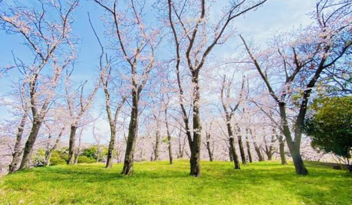
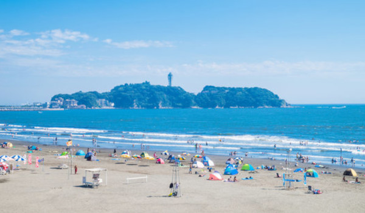
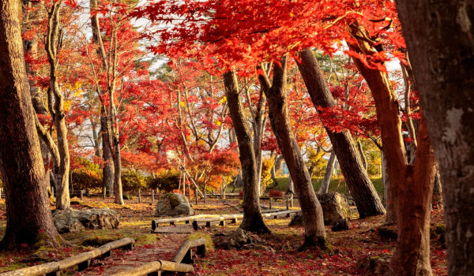

>四季の風景
日本ならではの美しい四季の風景をご紹介
春 - 桜と新緑の季節

春は、桜や色とりどりの花々が咲き誇る季節です。穏やかな気候の中、新しい季節の訪れを感じることができます。
夏 - 太陽が降り注ぐ季節

夏は、太陽が輝き、自然が生き生きとする季節です。海や山など、アウトドアを楽しむのに最適な時期です。
秋 - 色づく紅葉の季節

秋は、木々が美しく色づき、落ち着いた雰囲気が広がる季節です。澄んだ空気とともに、自然の変化を楽しめます。
冬 - 静寂と雪景色の季節
冬は、雪景色が広がり、心落ち着く時間が流れる季節です。寒さの中で温かさを感じるひとときを楽しめます。